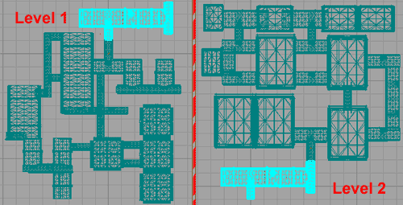
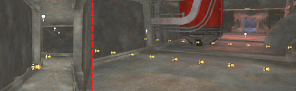
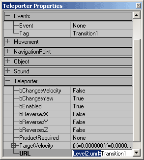
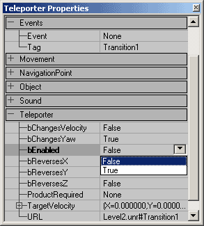
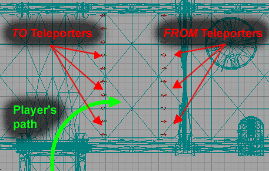
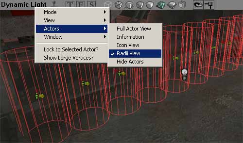

UDN
Search public documentation:
LevelTransitions
Interested in the Unreal Engine?
Visit the Unreal Technology site.
Looking for jobs and company info?
Check out the Epic games site.
Questions about support via UDN?
Contact the UDN Staff
Level Transitions
Document Summary: A short guide on how to set up Level Transitions between maps. Document Changelog: Last updated by Jason Lentz (DemiurgeStudios?), for creation purposes. Original author was Jason Lentz DemiurgeStudios?).Introduction
Teleporters can be used to send a player back and forth between two separate maps for level transitions. Here you will see how to set up Teleporters to make these transitions as seamless as possible. This document assumes a basic understanding of Teleporters, the Unreal Ed interface and how to set up levels. For more information on Teleporters see the Teleporters Example Map.Setting up the Levels
In each level you will need to create a space that exists in both maps so the level transition is as seamless as possible. This space should obviously be kept small so you avoid having too much overlap between the two maps. The below top views show the duplicated space shared by both maps.
This portion can easily be selected in a one map, and then copied and pasted with CTRL+C and CTRL+V commands. Once you have the transition space set up, then you are ready to place the Teleporters.Setting up the Teleporters
For the simple case of a narrow corridor, two Teleporters (a TO Teleporter and a FROM Teleporter) may be sufficient, but if your level transition occurs in a wider space, you may need a series of TO and FROM Teleporters to prevent jarring transitions. In this document TO Teleporters are where the player will teleport to and FROM Teleporters are where the player will teleport from. This section describes how to set up the Teleporters to get the best results.
Properties
To simplify the set up process you can set up one base Teleporter then copy it with minimal changes to differentiate between the TO and FROM Teleporters. Another helpful timesaver would be to create Groups in the Groups Browser for both the TO and FROM Teleporters. In the base Teleporter you will want to assign a Tag and a URL with the same Tag but in a different Map.
If you level transition is in larger space, you may need to create multiple Teleporters in a row. The Placement section explains how you should arrange the Teleporters. You will of course need unique names for each Teleporter in a single map. Now in the TO Teleporters you need only set the bEnabled field to False. Leave the URL field in the FROM Teleporter though. The Teleporter in this level won't use it, but if you select all of your Teleporters -and- the surrounding Level Transition space, you can copy and paste it into your other map (as described above in the Level Setup section) and then switching the TO and FROM Teleporters becomes trivial. Just select all the Teleporters in the second map and reverse their bEnabled fields so that the TO Teleporters become FROM and vice versa.
Placement
For a level transition that will allow you to go back and forth between two different levels you will need two maps and two Teleporters in each map. One Teleporter will be used to teleport to, and the other is used to teleport from. Place the Teleporters in identical locations in the two maps, and then reverse their bEnabled fields as described above. This turns the FROM Teleporters into TO Teleporters and vice versa.
Note that the player should cross the TO Teleporter before crossing the FROM Teleporter and that they are spaced substantially far apart. If they are placed too close together the player might accidentally back up some and end up reloading the level that he or she just came from. For larger sections you may find it helpful to turn on the Radii View in the Actors View on the viewport then make sure that collision radii form a solid wall.
It is better to create a wall of Teleporters rather than use one Teleporter with a large collision radius. Using the wall of Teleporters will avoid jarring level transitions since the player is be teleported to the location of the Teleporter not their location from the Teleporter. The smaller the discrepancy here, the less jarring the transition will be.Orientation
Players will not keep their orientation from one level to the next, but you can orient the player to at least point them in the direction once they load the next map. To set the player's orientation, you will need to change the Yaw Rotation under the Movement properties of the FROM Teleporter only. For quick reference here are the Unreal Rotation units for the basic compass directions:| North | South | West | East |
| 49152 | 16384 | 32768 | 0 |
Summary
To sum up these points in quick bullet form, here are the things you need to keep in mind when setting up level transitions with Teleporters.- TO Teleporters (or Teleporters that you teleport to) are set to bEnabled False
- Set the URL field to be the same as its Tag but in the connecting level
- Set the proper orientation in the Movement field of the FROM Teleporter
- Arrange the levels so that the player crosses the TO Teleporters before the FROM Teleporters